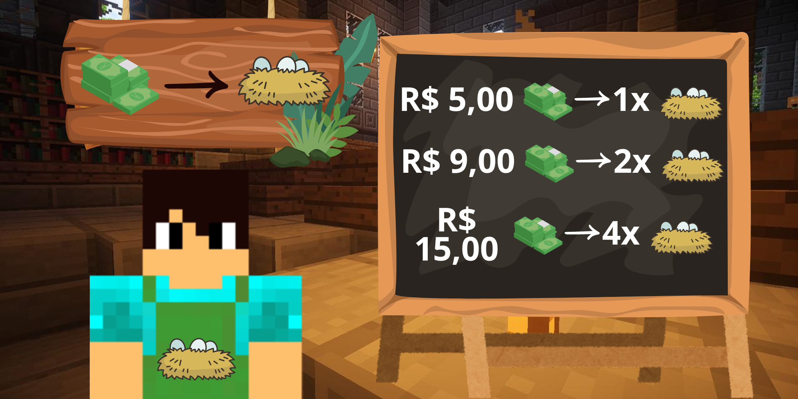
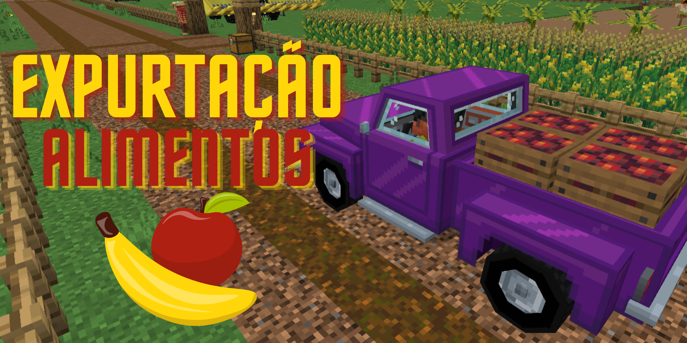
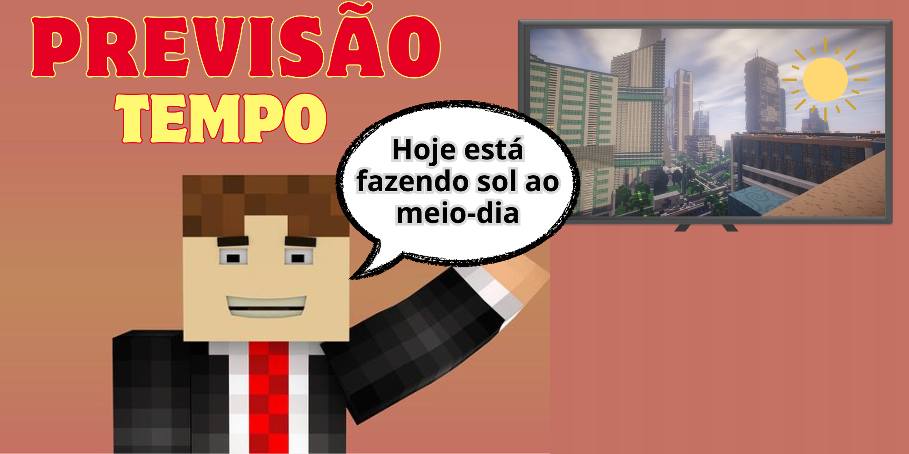

A relação entre o campo e a cidade é complexa e dependente. A cidade é um centro de desenvolvimento econômico, oferecendo serviços e transformando produtos agrícolas em bens de consumo. Ela também atraiu muitas pessoas do campo, em busca de melhores condições de vida e trabalho, especialmente durante a industrialização.
O campo, por outro lado, fornece recursos essenciais como alimentos e matérias-primas para a cidade. Com o avanço tecnológico, o campo também se modernizou, adquirindo práticas urbanas que aumentam a eficiência na produção.
Essa dependência é vital para ambos os lados. A cidade não apenas controla os meios de produção e mercado, mas também depende do campo para o fornecimento de alimentos e outros recursos básicos. O campo, ao adotar tecnologias da cidade, melhora sua produtividade e sustentabilidade, beneficiando a economia e a qualidade da vida no campo.
A migração campo-cidade foi intensa durante a industrialização, buscando melhores oportunidades de emprego e vida. No entanto, o campo tem se modernizado, adotando tecnologias e práticas inovadoras que aproximam suas condições às da cidade. Isso inclui o acesso à serviços de saúde, educação e infraestrutura, fortalecendo ainda mais a conexão entre os dois.
Essa modernização inclui o uso de tecnologias avançadas, como a internet, para acessar informações sobre clima, técnicas agrícolas e mercados. Além disso, os serviços urbanos de saúde e educação melhoram a qualidade da vida rural.
